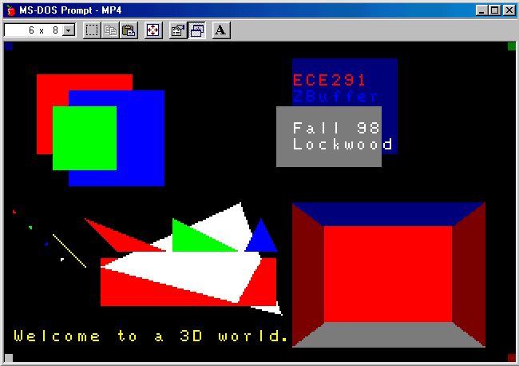

| ECE291 | Computer Engineering II | Lockwood, Fall 1998 |
| Purpose | Video graphics, Image data, Geometry, 3D-acceleration |
| Points | 50 |
| Due Date | Wednesday 11/11/98 |

For this MP, we will store the 2D image in the buffer (variable) called ScreenBuffer. ScreenBuffer holds 320x200=64,000 bytes of data and is contained in its own segment called SBSeg. Each byte in the ScreenBuffer corresponds to a palette entry for a colored pixel. The format of the data in ScreenBuffer is identical to that stored in the VRAM of the VGA adapter.
To access these segments in your code, you need to use the MASM SEG keyword. The SEG keyword allows you to reference the values of a segment. For example, suppose we have this code:
|
MySeg SEGMENT PUBLIC 'DATA1' Var1 DB Var2 DW MySeg ENDS . . . MOV AX, SEG Var1 MOV ES, AX |
After the last two lines are executed, ES will contain the segment that Var1 is contained within, i.e., MySeg.
The depths of pixels in the world are stored in a buffer (variable) called ZBuffer. ZBuffer also holds 320x200=64,000 bytes of data and is contained in its own segment called ZBSeg. Each byte corresponds to an unsigned byte-sized value representing the depth of the pixel. A value of 0 represents a close pixel, while a value of 255 represents a distant pixel.
When we wish to draw a new point (Xn,Yn,Zn) in the Z-Buffer, we compare the depth (Zn) of the pixel to the pixel already in the buffer at location (Xn,Yn). If the pixel is closer (i.e., in front of the pixel that is in the buffer), we should draw the point, colored Cn, in ScreenBuffer. The the point is more distant than the value already in ScreenBuffer, we should leave that element in ScreenBuffer unchanged.
and each of these points is connected by a line. To render our polygon in a 3D world, then, we need to calculate the precise values of (x,y,z) along the boundary lines of the polygon. In order to do this, we need to first determine an algorithm for drawing a line from (x1,y1) to (x2,y2).
In order to compute the (x,y) coordinates for each point, P, along a line, we must choose an indepedent variable. If we choose y as the independent variable, then our code will need to compute x as a function of y for all points between the endpoints of the line. For the line connecting P1 and P2, we can compute each (x,y) point as x = x1 + (y-y1)*(x2-x1)/(y2-y1) for each value of y between y1 and y2. The following figure illustrates how this is done:
Now that we know how to draw lines in a two-dimensional plane, we can extend the notion to drawing lines in 3 dimensions. For a line between (x1,y1,z1) and (x2,y2,z2), let us choose to make y our independent variable. We then need to calculate points for x and z as per the above method. Applying this technique for all the boundary lines of our polygon gives us an algorithm for drawing an unfilled polygon.
For each value of y on the screen, a triangle will have two values of x. One will mark the left edge of the triangle, and the other will mark the right. If we have two arrays, each having as many elements as there are y-values, i.e., 200, to mark the boundaries, we could simply fill points in between the x-boundary values. However, since we would wish to accurately render a depth for each point in between the boundaries, we would also need to store a z value for each boundary point. Then, for each point on the triangle's boundary, we would need to store an x-value and a z-value. You might like to keep track of these two x-values and two z-values (one (X,Z) pair per edge of the triangle) using four arrays. We will refer to these arrays as MinX (left-edge x-value), ZMinX (the Z value at the left-edge x point), MaxX (right-edge x-value), ZMaxX (the Z value at the right-edge x point).
At the time we are computing the points along a line, we need to determine if it is on the left edge or right edge of the triangle. We use our MinX and MaxX structures to store the minimum and maximum x-values for each value of Y. Initially, set:
MinX[Y]=MaxValue,
ZMinX[Y]=MaxValue,
MaxX[Y]=MinValue,
ZMaxX[Y]=MinValue,
for all values of Y that are visible on the screen. For each value of X that we compute, we can compute MinX[Y] and MaxX[Y] as:
MinX[Y]=X if X < MinX[Y]
MaxX[Y]=X if X > MaxX[Y].
Also, if we update the MinX table, we store the Z at that MinX, and similarly, if we update the MaxX table, we store the Z at that MaxX. The following figure might help to clarify how these data structures are useful:
|
MyFunc PROTO near C, Input1:word, Input2:word Variable dw 9 MyFunc PROC near C uses SI DI, Input1:word, Input2:word .. MOV SI, Input1 ; Let MASM automatically compute Input1==[BP+4] MOV DI, Input2 ; Let MASM automatically compute Input2==[BP+6] .. RET MyFunc ENDP . . . MOV BX, 5 INVOKE MyFunc, BX, Variable . . . |
|
MyFunc PROTO near C, Input1:word, Input2:word Variable dw 9 MyFunc PROC near PUSH BP MOV BP, SP PUSH SI PUSH DI MOV SI, [BP+4]; Near procedures have 2 less bytes on stack MOV DI, [BP+6]; Near procedures have 2 less bytes on stack . . . POP DI POP SI POP BP RET MyFunc ENDP . . . MOV BX, 5 PUSH Variable PUSH BX CALL MyFunc . . . |
TITLE ECE291:MP4-ZBuffer - Your Name - Date
.MODEL LARGE ; Allow multiple segments to be defined
.486 ; Allow generation of code which requires an 80486 or better
COMMENT % Z-Buffer
ECE291: Machine Problem 4
Prof. John W. Lockwood
University of Illinois
Dept. of Electrical & Computer Engineering
Fall 1998
Ver. 1.1
Revision History:
1.0: - Initial release
1.1: - Avoids infinite loop during benchmarking
- Library Procedure names prefixed with "lib" to fix link error.
%
;====== Constants =========================================================
VIDSEG EQU 0A000h ; VGA Video Segment Adddress
VIDTEXTSEG EQU 0B800h
CR EQU 13
LF EQU 10
KeyPrompt MACRO ; Optionally wait for user key press
Local KPEnd
cmp KeyWait,0 ; KeyWait=0 : No pause
JE KPEnd ; KeyWait=1 : Wait for key press
call kbdin
KPEnd:
ENDM
;====== Segments ==========================================================
PUBLIC ScreenBuffer, ZBuffer, FontMap, Scratchpad
PUBLIC LoadPCX
SBSeg segment 'DATA1'
ScreenBuffer DB 65535 dup(?)
SBSeg ENDS
ZBSeg segment 'DATA2'
ZBuffer DB 65535 dup (?)
ZBSeg ENDS
FontSeg segment 'DATA3'
Fontmap DB 65535 dup (?)
FontSeg ENDS
ScrSeg segment 'DATA4' ; Used by LoadPCX
Scratchpad DB 65535 dup(?)
ScrSeg ENDS
stkseg segment stack ; *** STACK SEGMENT ***
db 128 dup ('STACK ') ; 128*8 = 1024 Bytes of Stack
stkseg ends
;====== Function type declarations ========================================
extrn kbdin:near ; LIB291 routines are always Free
extrn SetStart:near ; Start Routine
extrn mp4xit:near ; Exit Routine
extrn LibLoadPCX:near ; Load PCX file
LibModeGraph PROTO near C ; Switch video mode to graphics (Given)
LibModeText PROTO near C ; Switch video mode to text (Given)
LibInitBuf PROTO near C ; Initialize ZBuffer
LibDrawScreen PROTO near C ; Transfer ZBuffer contents to VRAM
LibDrawPoint PROTO near C X:word, Y:word, Z:byte, Color:byte
LibDrawText PROTO near C X:word, Y:word, Z:byte,
Color:byte
LibDrawRect PROTO near C X:word, Y:word, Z:byte,
W:word, H:word,
Color:byte
LibDrawTriangle PROTO near C X1:word, Y1:word, Z1:word,
X2:word, Y2:word, Z2:word,
X3:word, Y3:word, Z3:word,
Color:byte
;====== Begin Code/Data segment ==========================================
cseg segment public 'CODE'
assume cs:cseg, ds:cseg, es:nothing
FontFile db 'letters.pcx',0 ; Filename of PCX file with font images
; FontMap is a 320x200 PCX File containing 8x8 letters
; ABCDEFGHIJKLMNOPQRSTUVWXYZ
; abcdefghijklmnopqrstuvwxyz
; 01234567890
;
; Letters is a 256-word lookup table that
; maps each ASCII value to a location in FontMap
; Our program need only map letters, digits, space, and period.
Letters dw 32 dup ((320*16)+(8*11))
dw (320*16)+(8*12) ; ' '
dw 13 dup ((320*16)+(8*11))
dw (320*16)+(8*10) ; '.'
dw (320*16)+(8*11)
dw (320*16)+(8*0) ; '0'
dw (320*16)+(8*1) ; '1'
dw (320*16)+(8*2) ; '2'
dw (320*16)+(8*3) ; '3'
dw (320*16)+(8*4) ; '4'
dw (320*16)+(8*5) ; '5'
dw (320*16)+(8*6) ; '6'
dw (320*16)+(8*7) ; '7'
dw (320*16)+(8*8) ; '8'
dw (320*16)+(8*9) ; '9'
dw 7 dup ((320*16)+(8*11))
dw (320*0)+(8*0) ; 'A'
dw (320*0)+(8*1) ; 'B'
dw (320*0)+(8*2) ; 'C'
dw (320*0)+(8*3) ; 'D'
dw (320*0)+(8*4) ; 'E'
dw (320*0)+(8*5) ; 'F'
dw (320*0)+(8*6) ; 'G'
dw (320*0)+(8*7) ; 'H'
dw (320*0)+(8*8) ; 'I'
dw (320*0)+(8*9) ; 'J'
dw (320*0)+(8*10) ; 'K'
dw (320*0)+(8*11) ; 'L'
dw (320*0)+(8*12) ; 'M'
dw (320*0)+(8*13) ; 'N'
dw (320*0)+(8*14) ; 'O'
dw (320*0)+(8*15) ; 'P'
dw (320*0)+(8*16) ; 'Q'
dw (320*0)+(8*17) ; 'R'
dw (320*0)+(8*18) ; 'S'
dw (320*0)+(8*19) ; 'T'
dw (320*0)+(8*20) ; 'U'
dw (320*0)+(8*21) ; 'V'
dw (320*0)+(8*22) ; 'W'
dw (320*0)+(8*23) ; 'X'
dw (320*0)+(8*24) ; 'Y'
dw (320*0)+(8*25) ; 'Z'
dw 6 dup ((320*16)+(8*11))
dw (320*8)+(8*0) ; 'a'
dw (320*8)+(8*1) ; 'b'
dw (320*8)+(8*2) ; 'c'
dw (320*8)+(8*3) ; 'd'
dw (320*8)+(8*4) ; 'e'
dw (320*8)+(8*5) ; 'f'
dw (320*8)+(8*6) ; 'g'
dw (320*8)+(8*7) ; 'h'
dw (320*8)+(8*8) ; 'i'
dw (320*8)+(8*9) ; 'j'
dw (320*8)+(8*10) ; 'k'
dw (320*8)+(8*11) ; 'l'
dw (320*8)+(8*12) ; 'm'
dw (320*8)+(8*13) ; 'n'
dw (320*8)+(8*14) ; 'o'
dw (320*8)+(8*15) ; 'p'
dw (320*8)+(8*16) ; 'q'
dw (320*8)+(8*17) ; 'r'
dw (320*8)+(8*18) ; 's'
dw (320*8)+(8*19) ; 't'
dw (320*8)+(8*20) ; 'u'
dw (320*8)+(8*21) ; 'v'
dw (320*8)+(8*22) ; 'w'
dw (320*8)+(8*23) ; 'x'
dw (320*8)+(8*24) ; 'y'
dw (320*8)+(8*25) ; 'z'
dw 132 dup ((320*16)+(8*12))
KeyWait dw 0 ; Control variable for KeyPrompt MACRO
BCount dw ? ; Benchmark iteration Counter
public fontfile, letters
;====== Procedures ==========================================
;
; Procedures
;
;;;
;;; ModeGraph
;;; Switches to 320x200x256 VGA.
;;;
ModeGraph proc near C uses ax
mov ax, 0013h
int 10h ; VBIOS call to switch into
ret ; Mode 13h 320x200, 8-bit color
ModeGraph endp
;;;
;;; ModeText
;;; Switches to 80x50 text mode.
;;;
ModeText proc near C uses ax bx
mov ax, 1202h
mov bl, 30h
int 10h ; vBIOS call to switch into
mov ax, 3 ; text-mode video w/50 lines
int 10h
mov ax, 1112h
mov bl, 0
int 10h
ret
ModeText endp
;;;
;;; LoadPCX
;;; Loads (decompresses) a .PCX image into a specified segment.
;;;
;;; INPUTS
;;; AX = offset of segment to write into
;;; DX = offset of string to filename to read from
;;;
;;; NOTES
;;; See lab manual!
LoadPCX proc near
call LibLoadPCX ; Replace this line with your own code!
ret
LoadPCX endp
;;;
;;; InitBuf
;;; Initializes the ScreenBuffer and the ZBuffer to Black pixels of
;;; depth 255.
;;;
InitBuf proc near C
Invoke LibInitBuf ; Replace this line with your own code!
ret
InitBuf endp
;;;
;;; DrawScreen
;;; Blasts ScreenBuffer onto the video page.
;;;
DrawScreen proc near C
Invoke LibDrawScreen ; Replace this line with your own code!
ret
DrawScreen endp
;;;
;;; DrawPoint
;;; Draws a point at (x,y,z) with a given color.
;;;
DrawPoint proc near C X:word, Y:word, Z:byte, Color:byte
Invoke LibDrawPoint, X,Y,Z,Color ; Replace this line with your own code!
ret
DrawPoint endp
;;;
;;; DrawRect
;;; Draws a rectangle whose upper left corner is (x,y,z)
;;; with width W, height H, and a specified color.
;;;
DrawRect proc near C X:word, Y:word, Z:byte, W:word, H:word, Color:byte
Invoke LibDrawRect, X,Y,Z,W,H,Color ; Replace this line with your own code!
ret
DrawRect endp
;;;
;;; DrawText
;;; Draws a text string at (x,y,z) with the specified color.
;;;
;;; INPUTS
;;; SI = pointer (offset) to string.
;;;
DrawText proc near C X:word, Y:word, Z:byte, Color:byte
Invoke LibDrawText, X,Y,Z,Color ; Replace this line with your own code!
ret
DrawText endp
;;;
;;; DrawTriangle
;;; Draws a triangle with depth gradation, given three points and a solid
;;; fill color.
;;;
DrawTriangle PROC near C X1:word, Y1:word, Z1:word,
X2:word, Y2:word, Z2:word,
X3:word, Y3:word, Z3:word, Color:byte
Invoke LibDrawTriangle, X1,Y1,Z1, X2,Y2,Z2, X3,Y3,Z3, Color
; Replace line above with your own code!
ret
DrawTriangle endp
;====== Test code ==========================================
;;;
;;; TestZBuf
;;; Exercises functionality of the ZBuf
String1 db 'ECE291','$'
String2 db 'ZBuffer','$' ; Strings used in TestZBuf
String3 db 'MP4','$'
String4 db 'Fall 98','$'
String5 db 'Lockwood','$'
String6 db 'Welcome to a 3D world.','$'
StringBench db 'Benchmarking Code ...','$'
; public String1, String2, String3, String4, String5
TestZBuf proc near
; Draw a rectangle
invoke DrawRect, 20, 20, 30, 60, 50, 12 ; first bright red box
invoke DrawScreen
KeyPrompt
; Test Z-Buffering
invoke DrawRect, 40, 30, 20, 60, 60, 9 ; bright blue box
invoke DrawRect, 30, 40, 10, 40, 40, 10 ; bright green box
invoke DrawScreen ; refresh display
invoke DrawRect, 180, 10, 250, 66, 60, 1 ; dim blue box
KeyPrompt
; Test screen clipping (pixels off the screen should NOT be drawn!)
invoke DrawRect, -10, -10, 255, 15, 15, 1 ; upper left corner (blue)
invoke DrawRect, 315, -10, 255, 15, 15, 2 ; upper right corner (green)
invoke DrawRect, 315, 195, 255, 15, 15, 4 ; lower right corner (red)
invoke DrawRect, -10, 195, 255, 15, 15, 8 ; lower left corner (white)
invoke DrawScreen
KeyPrompt
; Load font segment
mov ax, SEG FontSeg
mov dx, offset FontFile
call LoadPCX ; This should change the palette
KeyPrompt
; Test DrawText
mov si, offset String1 ; bright red 'ECE291'
invoke DrawText, 180, 20, 0, 12
mov si, offset String2 ; bright blue 'ZBuffer"
invoke DrawText, 180, 30, 10, 9
mov si, offset String3 ; bright green 'MP4'
invoke DrawText, 180, 40, 30, 10
mov si, offset String4 ; bright white 'Fall 98'
invoke DrawText, 180, 50, 20, 15
mov si, offset String5 ; bright white 'Lockwood'
invoke DrawText, 180, 60, 20, 15
mov si, offset String6 ; bright yellow 'Welcome' message
invoke DrawText, 5, 180, 40, 14
invoke DrawScreen
KeyPrompt
invoke DrawRect, 170, 40, 25, 66, 38, 24 ; gray box that covers 'MP4'
invoke DrawScreen ; but leaves 'Fall 98' visible
KeyPrompt
invoke DrawTriangle, 5, 105, 0, ; little red triangle
5, 106, 0,
6, 106, 0, 12
invoke DrawTriangle, 16, 116, 0, ; little green triangle
16, 115, 0,
15, 115, 0, 10
invoke DrawTriangle, 26, 125, 0, ; little blue triangle
26, 126, 0,
25, 126, 0, 9
invoke DrawTriangle, 35, 136, 0, ; little white triangle
36, 135, 0,
35, 135, 0, 15
invoke DrawScreen
KeyPrompt
invoke DrawTriangle, 30, 120, 0, ; this yellow triangle is
40, 130, 0, ; degenerate, so it looks like
50, 140, 0, 14 ; a diagonal yellow line
invoke DrawTriangle, 50, 110, 20, ; red obtuse triangle
70, 130, 20,
100, 130, 20, 12
invoke DrawTriangle, 105, 110, 50, ; green right isoceles triangle
105, 130, 50,
145, 130, 50, 10
invoke DrawTriangle, 160, 110, 80, ; blue isoceles triangle
150, 130, 80,
170, 130, 25, 9
invoke DrawRect, 60, 135, 150, 110, 30, 12 ; red rectangle beneath
invoke DrawScreen ; the three triangles
KeyPrompt
invoke DrawTriangle, 60, 140, 0, ; white scalene triangle should
147, 100, 100, ; intersect the red rectangle
173, 170, 200, 15
invoke DrawScreen
KeyPrompt
invoke DrawTriangle, 180, 100, 0, ; dark red triangle that makes
180, 190, 0, ; the left side of 3D maze
240, 145, 255, 4
invoke DrawTriangle, 180, 100, 0, ; dark blue triangle that makes
300, 100, 0, ; the top of 3D maze
240, 145, 255, 1
invoke DrawTriangle, 300, 100, 0, ; dark red triangle that makes
300, 190, 0, ; the right side of 3D maze
240, 145, 255, 4
invoke DrawTriangle, 300, 190, 0, ; dark gray triangle that makes
180, 190, 0, ; the left side of 3D maze
240, 145, 255, 24
invoke DrawRect, 220, 130, 100, 40, 30, 12 ; bright red rectangle
invoke DrawScreen ; illustrating far distance
KeyPrompt
invoke DrawRect, 200, 115, 75, 80, 60, 12 ; bright red rectangle
invoke DrawScreen ; illustrating near distance
KeyPrompt
ret
TestZBuf endp
;====== MAIN ==========================================
_main PROC FAR
mov ax,cseg ; Set default segment equal to code segment
mov ds,ax
mov ax,VidSeg ; Initalize extra segment for Video graphics
mov es,ax
invoke ModeGraph ; Switch VGA into grahics mode
invoke InitBuf ; Initialize ZBuffer
mov KeyWait,1 ; Have KeyPrompt pause for keystroke been routines
call TestZBuf ; Test functionality of Z-Buffer
invoke InitBuf ; Initialize ZBuffer
mov BCount,100 ; Benchmark performance of code
mov si, offset StringBench ; Display Benchmark Start Message
invoke DrawText, 0, 0, 0, 12 ; (Red text at top-left of screen)
mov KeyWait,0
call SetStart ; Optimize your code to reduce running time!
BLoop: call TestZBuf
dec BCount
jnz BLoop
invoke ModeText ; Return to text-mode video
call mp4xit
_main ENDP
cseg ends
end _main